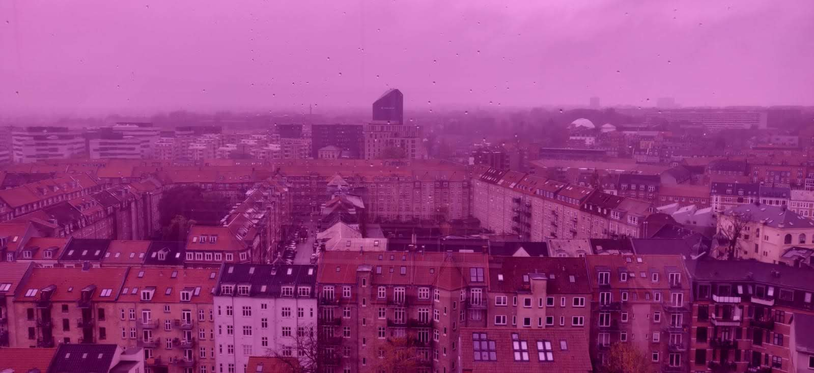
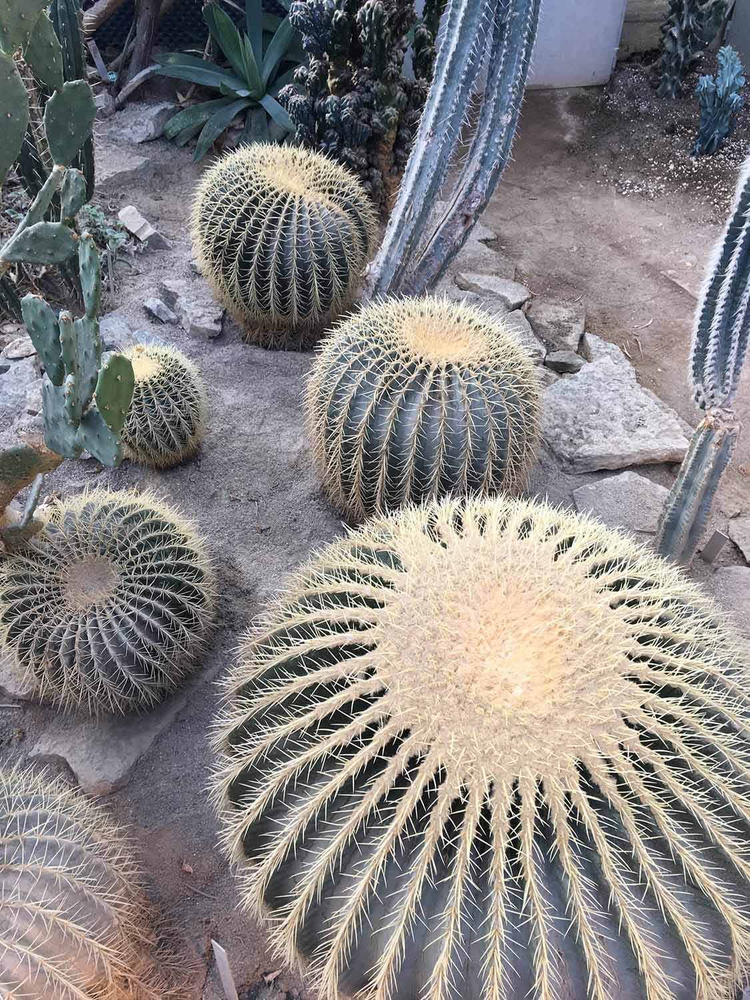
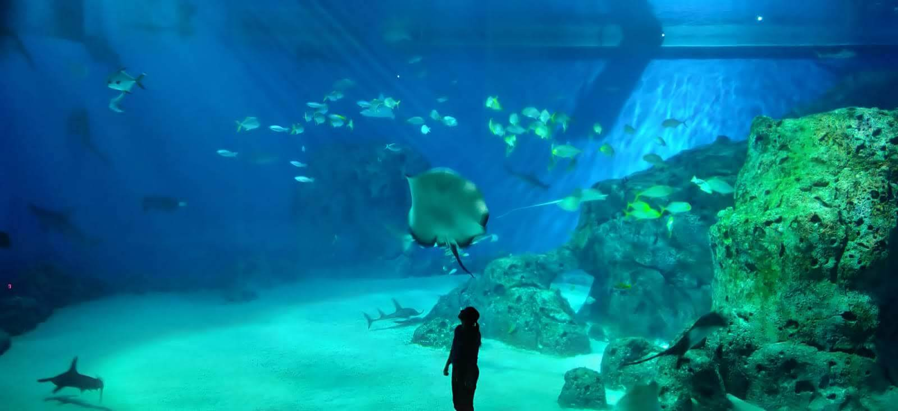
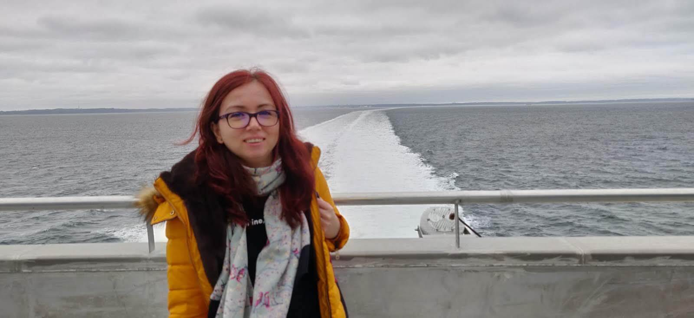

ARoS Aarhus Art Museum
ARoS is the main art museum in Aarhus and one of the largest museums in Northern Europe. On the roof of ARoS you can visit the rainbow panorama.
Greenhouses in the Botanical Garden
The park was originally created primarily as a botanical and academic study-ground in relation to Aarhus University. Here you can see thousands of plant species.
Northern Europe’s largest aquarium is a sea of fun
Den Blå Planet Aquarium is the home to thousands of animals and 7 million litres of water.
A trip from Aarhus to Copenhagen by boat
Boats link virtually all of Denmark’s populated islands. The ferry is the fastest way to travel between Copenhagen and Aarhus.
